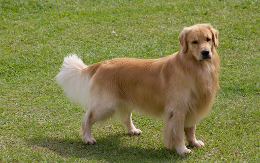

黃金獵犬

特徵
頭骨寬，縱橫兩個方向均呈輕微拱形，但枕骨和前額均不突起。額段清晰不陡峭。前臉深而寬，與頭骨差不多長。從側面看，口鼻部直，與頭骨接合流暢、穩固；從前面和側面看，額段處均比尖端略深且寬。上唇下垂但不顯得沉重。可以去除鬍鬚但不提倡。眼睛表情友善、聰慧，大但不能太大，眼緣色深，雙眼間距大，適度凹陷。顏色為深棕較理想；中等棕色也可接受。傾眼、三角形且窄的眼與正確的表情背離，為缺陷。當犬直視前方時，無可見的白色或瞬膜。
性格
黃金獵犬很活躍，喜歡玩，但也出奇的耐心，可以靜靜地坐幾個小時不動，就好似打獵時在狩獵偽裝（Hunting blind）底下等獵物一樣。可能是打獵的遺傳特質，跳進跳出小船、游泳亦喜歡。且友善、可靠、可信賴。在自然境況下，對其他犬或人表現出喜爭鬥或敵意；是無來由的膽怯、神經緊張，是與黃金獵犬的特質相悖的，根據其嚴重程度受罰。
歷史
最早的雜交在一條黃色獵狗, Nous, 和一條特威德西班牙水獵犬(Tweed Water Spaniel)母狗, Belle之間進行. 特威德西班牙水獵犬現在絕跡了，但那時在邊境地區很常見。Majoribanks在1865年從一個未註冊的雜交狗種(一般是黑色捲毛)的尋回犬小狗中買下Nous。在1868年，這次雜交產生了一窩四條小母狗。這四條成了培育計劃的基礎，該計劃還包括了愛爾蘭蹲獵犬(Red Setter), 沙色尋血獵犬(Bloodhound),聖約翰水犬(St Johns Water Dog of Newfoundland), 士兵格獵犬(Springer Spaniel), 和兩種更捲毛的黑色尋回犬。該血統又通過近親交配並按照Majoribanks的終極獵犬的想法進行挑選。這個展望包括比一般尋回犬更有活力和強健的犬種，但又和人出色的好，因而很溫柔並易訓練。俄羅斯牧羊犬在這些記錄中未被提到，其他工作犬品種也沒有。黃金獵犬的祖先全部都是運動犬，和Majoribanks的目標一致。英格蘭狗業俱樂部於1903年首次接受黃金獵犬註冊，名為'平毛-金色(Flat Coats - Golden)'。他們於1908年首次展示，並於1911年認定為一個品種，其描述為'尋回犬(金色和黃色)'。在1913年，黃金獵犬俱樂部成立。品名於1920年正式變更為黃金獵犬。
飼養注意事項
黃金獵犬因為是純種狗的關係，所以遺傳類的疾病比起混種狗來說高出不少，其中關節方面的問題特別容易發生，像是髖關節發育不良。這是一種退化性的疾病，患有此種症狀的狗狗，關節內骨骼會無法緊密接合，呈現錯位的狀態。飼主可以從日常生活中的幾個小地方觀察狗狗是不是有相關疾病，像是走路奔跑時，步伐會因後腳無法失力而造成不對稱的情形。或是上下樓梯困難，以及因為疼痛抗劇運動，這些小動作的發生，都可能是狗狗患有髖關節發育不良的警訊。雖然黃金獵犬在幼犬時小小隻的十分可愛，但牠其實只要兩年的時間就能長到成犬的體型，對於活動量較大的黃金獵犬來說，家中的環境需要有一定的大小。這樣才能讓牠擁有足夠的活動空間，此外，飼主也要有每天能夠帶他遛狗的時間，就像前面提到牠有獵犬的基因，還是有戶外活動的需求。